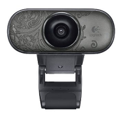
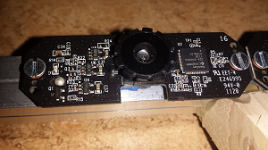
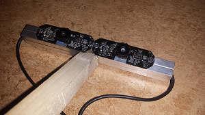
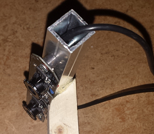
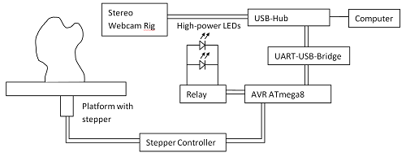
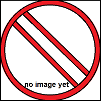
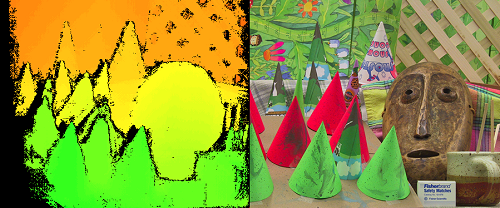

3D Scanner project
My 3D Scanner project consists of a hardware platform and a software part. It is based on cheap usb webcams, a small rotatable platform and a microcotroller that is controlled by the computer. In the future it will be able to transform small realworld objects into 3d pointclouds. The software is based on my computer vision library FreeCV and uses Qt.
Hardware
The first test platform
   {kind=link}
{kind=link}
{kind=link}
{kind=link}
Currently I am using two cheap Logitec C210 webcams (image from Amazon) for about 9.99 Euro each from ebay. They don't provide the best quality and have a maximum resolution of 640 x 480 but they are quite good enought for testing.
For my first tests of the stereo algorithm I've dismanteled the housing of the webcams. This is really easy. Remove the screws on the back to open the wecam. There are two smaller screw that hold the circut on the housing. I removed it and destroyed the housing to get out the cables of the webcam. Now I've got the raw hardware of my webcams and I was able to mount them on a aluminium suqare stick in parallel. To get a stable platform I've used some hotglue to fix the webcam rig on a platform that lets the camera face down to the ground with an angle of about 45 degrees. This system is only used for testing purposes.
The final hardware system
 {kind=link}
{kind=link}
The final system consists of a rotatable platform that is controlled by a micro controller, two LED light sources and the cheap stereo webcam rig. The microcontroller enabled or disables the LED light sources and rotates the platform that is mounted on a stepper motor. The stepper motor is connected to a stepper motor controller and the controller is mounted to a avr microcontroller. The microcontroller uses the UART port and a usb uart bridge to communicate with the computer. The two webcams and the uart-usb-bridge are connected to a small 3 or 4 port usb hub inside the scanner system. So only one usb port of the computer is used.
The task of the microcontroller is to rotate the platform around a specified angle. When the goal position is reached, the controller sends a signal to the computer to acknowlage the movement. The other task of the microcontroller is to enable or disable the light to enhance the quality of the captured images. But there could be a problem with reflections and shadows. To avoid shadows, I will place two lights on the right and left side of the two webcams.
Software
I've first implemented a command line tool, that grabs a stereo image and calculates a disparity map and a pointcloud by using my computervision library FreeCV. This works really good but currently is really slow because is only uses a single cpu core to calculate the disparity map. In the future I will try to port it to cuda. But the next step is to implement a userinterface to control the software system. I will use Qt to implement that but this is much more painfull task that implementing the small commandline tool so it will take much longer to do that. We will see..
In the following sections I will describe the major parts of this software system: The disparity map calculation, the point cloud generation and the point cloud registration. The image grabbing and conversation from YUYV to RGB/Grayscale is less interesting here.
Disparity Map calculation
{kind=link}
To calculate the disparity map, I've implemented a stereo matching algorithm that is called semi global matching (SGM) from Heiko Hirschmüller. It is widely used becuase it provides a good ratio between processing time and quality (See the image on the left).
It tries to minimize the output of a cost function for each pixel along 8 or 16 lines across the image. As cost function I've used a simple intensity based cost function that is represented by the intensity difference between two pixels. Cost functions like mutual information, proposed by Hirschmüller give slightly better results, but I don't think it's worth to implement it. For more information, consult Heiko's elaborations on SGM.
Point cloud generation

The point cloud generation is really easy. The only thing that you have to know is the cameras intrinsic and extrinsic parameters. In the example picture on the left side, I only used some example intrinisc parameter and no extrinsic ones because the data set does not provide a camera calibration. But for testing purposed it was okay. The full calulation process to get from 2D disparty map to 3D points is described here: PointGray Knowledge Base.
To get from camera coodinates to morld coodinates you have to multiply each point of the calculated pointcloud with a transformation matrix. The transformation matrix is thematrix that describes the camera position and orientation in the world. Now you have your reconstructed scene.
The final step - the point cloud registration
To get a full reconstructed scene, we have to take images while we move the camera around the object that we want to reconstruct. When we know the exact camera position for each viewing direction, we are able to merge the differnt point clouds to get a full reconstructed object. The problem is, that we never know the camera position exact enough (because of noise and so one...). To fix this issue, we have to do point cloud registration. This technique takes two pointcloud and it transforms the second pountcloud in such a way, that they fit perfectly together. The most widely used algorithm is called iterative closest point (ICP). It tries to solve this problem by minimizing the sum of squared distances between the points in the two pointclouds iteratively. I don't know if I am able to implement that algorithm by my own. We will see.
Results
Example objects scanned and reconstructed.
Under construction...